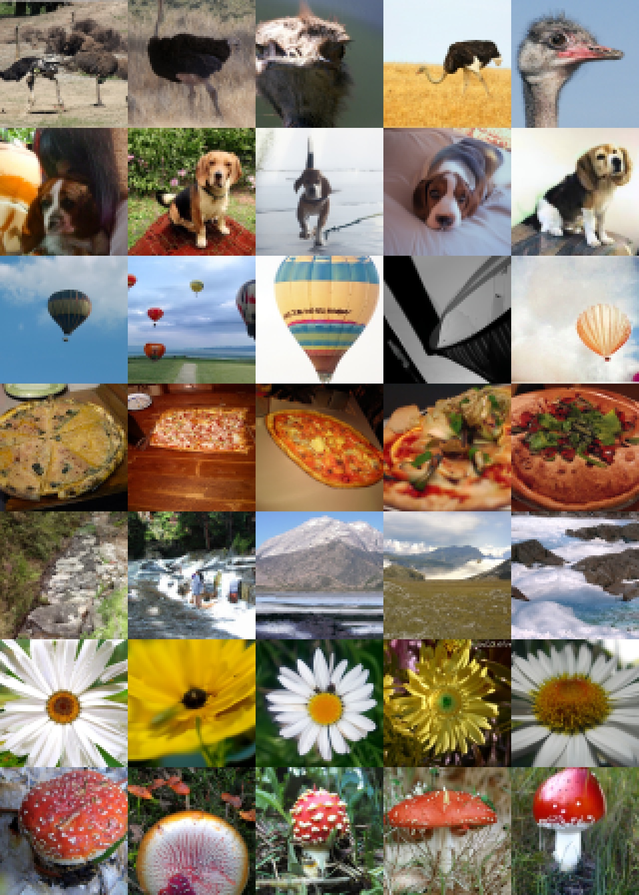
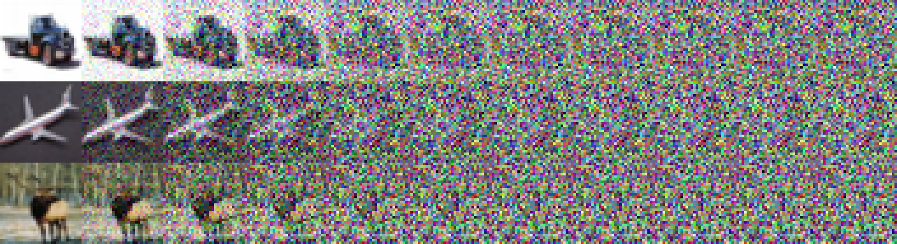
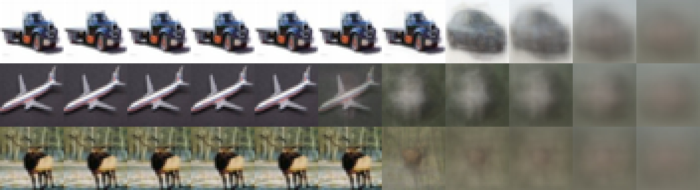
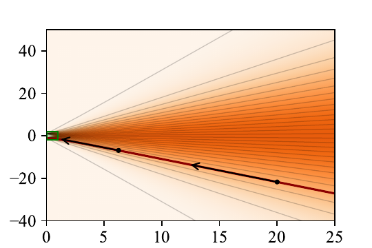
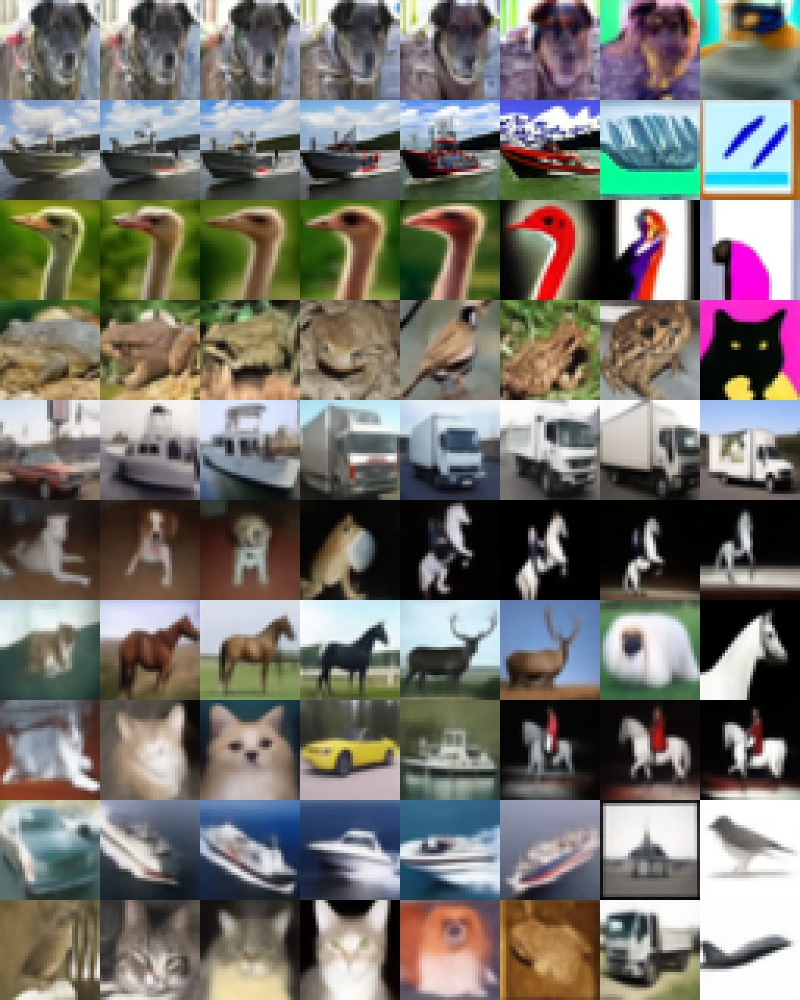
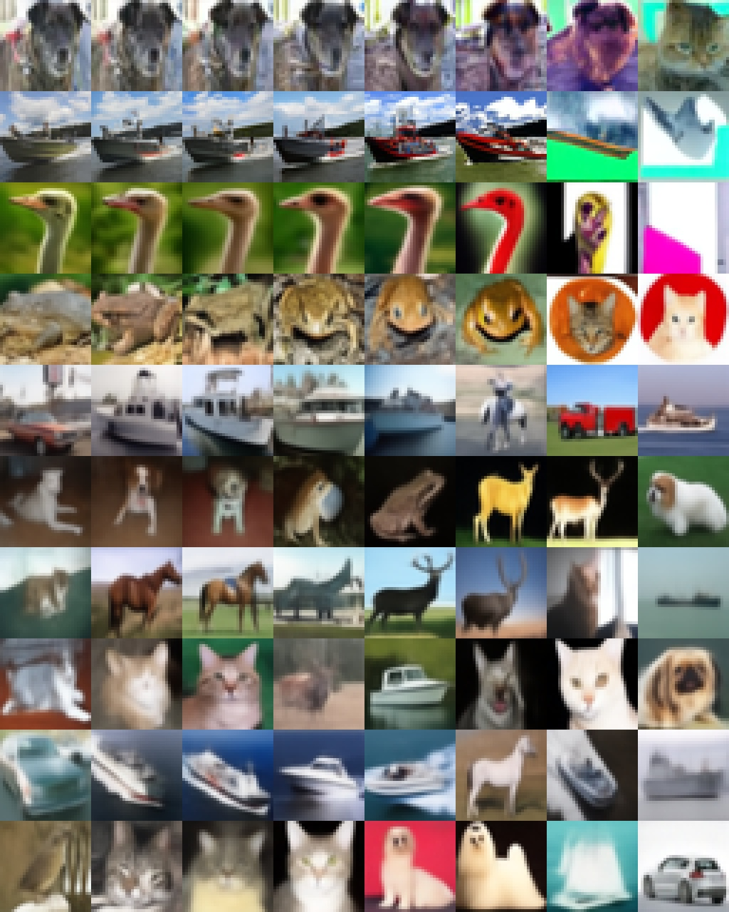
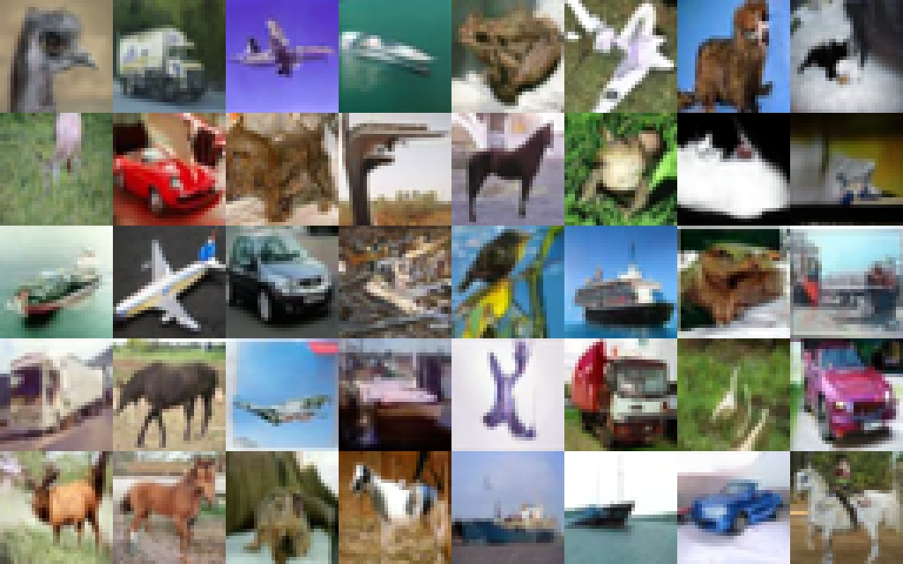

An interactive explainer
Elucidating the Design Space of Diffusion-Based Generative Models
By 2022, diffusion models had eaten image generation — and the literature was a mess. Three flavors (VP, VE, iDDPM) descended from three different theoretical frameworks, each tangling noise schedules, network parameterization, and loss weighting into a single inseparable package. Karras and colleagues looked at the design space and asked a heretical question: what if these choices are actually independent? The answer is yes, and once you untangle them you can mix-and-match. The payoff is concrete: FID 1.79 on CIFAR-10 and 1.36 on ImageNet-64 — beating every prior model — using only 35 network evaluations per image.

If you tried to read the diffusion literature in 2021, you ran into something strange. There were three competing frameworks, each with its own derivation: the variance-preserving (VP) SDE from Ho et al., the variance-exploding (VE) SDE from Song et al., and the improved DDPM (iDDPM) reformulation from Nichol and Dhariwal. Each had a different noise schedule, a different network output, a different loss. And each was presented as if the components were inseparable — a tightly coupled package descending from one theoretical framework.
This is the puzzle EDM dissolves. The authors take all three models, rewrite them in a single common framework, and show that the apparent coupling is an illusion. The noise schedule, the sampler, the network preconditioning, and the loss weighting are orthogonal axes. Once you see this, you can sweep each axis independently — and once you do that, you find a sweet spot that handily beats every prior model.
What follows is the design space they map, the equations that fall out of it, and a few interactive widgets so you can feel why the choices they made are the right ones.
1. Diffusion is denoising at every noise level
Strip the SDE machinery and the picture is simple. Take your dataset distribution $\pdata(\xx)$ and convolve it with Gaussian noise of standard deviation $\sigma$. Call the result $p(\xx; \sigma)$. At $\sigma = 0$ this is just the data; at $\sigma \gg \sdata$ it is indistinguishable from pure Gaussian noise. Now imagine a knob that lets you slide between these — at every value of $\sigma$, you have a slightly blurred version of the data distribution. A diffusion model is a denoiser $D(\xx; \sigma)$ that, for any noisy image $\xx$ and any noise level $\sigma$, predicts what the clean image probably was.
The training objective is just regression:
$$ \mathbb{E}_{\yy \sim \pdata}\, \mathbb{E}_{\nn \sim \mathcal{N}(\zero, \sigma^2 \II)} \big\| D(\yy + \nn; \sigma) - \yy \big\|^2 $$
The remarkable identity that makes everything click is this: the score function $\nabla_\xx \log p(\xx; \sigma)$ — the gradient pointing toward higher data density — is just the denoiser, shifted and scaled:
$$ \nabla_\xx \log p(\xx; \sigma) = \frac{D(\xx; \sigma) - \xx}{\sigma^2} $$
So a denoiser is a score model. Substitute it into the probability flow ODE,
$$ d\xx = -\dot\sigma(t)\, \sigma(t)\, \nabla_\xx \log p(\xx; \sigma(t))\, dt, $$
and you have a deterministic generative process: start from Gaussian noise, integrate backward in time, end at a sample. Every diffusion model in the literature is just a different way of parameterizing $D$, a different schedule $\sigma(t)$, and a different way of stepping through this ODE.


2. The straight-line schedule
Now for EDM's first sharp choice. The ODE we just wrote down depends on a schedule function $\sigma(t)$ that determines how the noise level changes with sampler time $t$. VP picks $\sigma(t) = \sqrt{e^{\frac{1}{2}\beta_d t^2 + \beta_{\min} t} - 1}$; VE picks $\sigma(t) = \sqrt{t}$; both choices come from theoretical convenience. EDM argues these are all wrong, and the right choice is the simplest possible one:
$$ \sigma(t) = t, \qquad s(t) = 1 $$
That is, time is noise level, and the image is never rescaled along the way. Substitute into the ODE and the whole thing collapses to a single, ravishingly clean equation:
$$ \frac{d\xx}{dt} = \frac{\xx - D(\xx; t)}{t} $$
This has a striking interpretation. At any point $\xx$ along the trajectory, the tangent direction $d\xx/dt$ is exactly the unit vector from $D(\xx; t)$ to $\xx$, scaled by $1/t$. In words: the trajectory always points away from where the denoiser thinks the clean image lies. A single Euler step all the way to $t = 0$ would land you exactly at $D(\xx; t)$.
Why is this so much better than $\sqrt{t}$ or the exponential VP schedule? Because the denoiser's prediction changes slowly with $t$. The "interesting" region — where $D(\xx; t)$ actually shifts as you vary $t$ — is a narrow window in the middle of the noise spectrum (look back at the denoising figure above). Outside that window, $D$ is essentially constant: at large $t$ it returns the dataset mean, at small $t$ it returns $\xx$ itself. So if the tangent direction is locked to $D$, and $D$ barely changes over most of the trajectory, the trajectory is nearly linear. A first-order solver can take giant steps without making much truncation error.

3. Heun, ρ = 7, and the noise-level ruler
Given a near-linear trajectory, the question is how to integrate it efficiently. Two choices matter: the solver and the discretization of time.
For the solver, EDM uses Heun's second-order method. Euler takes a step $\xx_{i+1} = \xx_i + (\sigma_{i+1} - \sigma_i)\,d_i$ and accumulates $\mathcal{O}(h^2)$ error per step. Heun corrects this: after Euler, it recomputes the derivative at the new point, averages the two derivatives, and re-steps. This costs one extra network evaluation per step but knocks the local error down to $\mathcal{O}(h^3)$. Empirically: same FID at roughly half the NFE.
# Heun sampler (EDM, Algorithm 1)
sample x_0 ~ N(0, sigma_max^2 * I)
for i = 0, ..., N-1:
d_i = (x_i - D(x_i; sigma_i)) / sigma_i # ODE derivative
x_pred = x_i + (sigma_{i+1} - sigma_i) * d_i # Euler step
if sigma_{i+1} != 0: # 2nd-order correction
d_prime = (x_pred - D(x_pred; sigma_{i+1})) / sigma_{i+1}
x_{i+1} = x_i + (sigma_{i+1} - sigma_i) * 0.5 * (d_i + d_prime)
else:
x_{i+1} = x_pred
return x_NFor the discretization of the noise levels themselves, EDM proposes a one-parameter family:
$$ \sigma_i = \left( \smax^{1/\rho} + \frac{i}{N-1}\big( \smin^{1/\rho} - \smax^{1/\rho} \big) \right)^{\rho}, \quad \sigma_N = 0 $$
The shape parameter $\rho$ controls how step sizes are distributed: $\rho = 1$ is uniform in $\sigma$; larger $\rho$ packs more steps near $\smin$ (where the denoiser changes fastest and small errors matter most) and lets the steps near $\smax$ spread out. A first-principles truncation-error analysis (Appendix B.3) suggests $\rho \approx 3$ — but in practice, image quality keeps improving until $\rho \approx 7$. The authors set $\rho = 7$ everywhere.
4. The preconditioning trick
Here is where the design space cracks open most dramatically. Suppose you tried to train a neural network $D_\theta(\xx; \sigma)$ directly. At $\sigma = 80$, $\xx$ has magnitude around 80; at $\sigma = 0$, $\xx$ has magnitude around $\sdata \approx 0.5$. The input scale varies by 160× over the noise range. No neural network handles that gracefully.
Prior methods all do the same dodge: don't represent $D_\theta$ directly. Train a different network $F_\theta$ to predict the noise $\nn$ (scaled to unit variance), then reconstruct $D$ via $D_\theta(\xx; \sigma) = \xx - \sigma F_\theta(\cdot)$. This has its own problem: at large $\sigma$, any error in $F_\theta$ is multiplied by $\sigma$ when you compute $D$. You're asking the network to predict, with surgical accuracy, a noise pattern that almost entirely cancels the input — to leave behind a clean image whose features are nearly invisible.
EDM's resolution: let the network predict whatever combination of signal and noise is easiest at the current noise level, and use a $\sigma$-dependent skip connection to route between them:
$$ D_\theta(\xx; \sigma) = \cskip(\sigma)\, \xx + \cout(\sigma)\, F_\theta\big( \cin(\sigma)\, \xx;\; \cnoise(\sigma) \big) $$
Four scalar functions of $\sigma$, derived from three principles: (i) network inputs $\cin \cdot \xx$ should have unit variance, (ii) the effective training target for $F_\theta$ should have unit variance, and (iii) errors in $F_\theta$ should be amplified as little as possible. The closed-form solutions, given clean-data std $\sdata$:
$$ \cskip(\sigma) = \frac{\sdata^2}{\sigma^2 + \sdata^2}, \quad \cout(\sigma) = \frac{\sigma \cdot \sdata}{\sqrt{\sigma^2 + \sdata^2}}, \quad \cin(\sigma) = \frac{1}{\sqrt{\sigma^2 + \sdata^2}}, \quad \cnoise(\sigma) = \tfrac{1}{4}\ln(\sigma) $$
Stare at $\cskip$. At low noise, $\cskip \approx 1$: the network's output is mostly the skip connection — that is, $D_\theta \approx \xx$, with $F_\theta$ contributing only a small correction. At high noise, $\cskip \approx 0$: the network's output is mostly $F_\theta$, predicting the clean image essentially from scratch. Without any architecture change, the network smoothly transitions from "predict the residual" at low noise to "predict the image" at high noise. This is the design that no prior method had — and replacing the preconditioning alone, with no other changes, makes training noticeably more robust.
5. Loss weighting and noise distribution
Once preconditioning is decoupled, two related questions become visible. Where on the $\sigma$ axis should we spend training compute? And how much weight should each $\sigma$ get in the loss?
Rewrite the training objective in terms of the raw network output $F_\theta$:
$$ \mathbb{E}_{\sigma, \yy, \nn}\Big[ \underbrace{\lambda(\sigma)\,\cout(\sigma)^2}_{\text{effective weight}} \cdot \big\| F_\theta(\cdots) - \text{target} \big\|^2 \Big] $$
To make per-$\sigma$ training loss roughly equal at initialization, EDM picks $\lambda(\sigma) = 1/\cout(\sigma)^2 = (\sigma^2 + \sdata^2)/(\sigma \cdot \sdata)^2$ — exactly cancelling the $\cout$ amplification. With this $\lambda$, no noise level intrinsically dominates the loss.
For the noise distribution $\ptrain(\sigma)$, the question is harder. Look at the per-$\sigma$ loss after training. At very low $\sigma$, the noise is so small that distinguishing it from the signal is essentially impossible — the loss is irreducible. At very high $\sigma$, the noise dominates so completely that the optimal answer is just the dataset mean — also irreducible. The interesting reduction happens at intermediate $\sigma$.
EDM's choice: a log-normal distribution centered on the regime where progress is possible:
$$ \ln \sigma \sim \mathcal{N}(P_{\text{mean}},\, P_{\text{std}}^2), \quad P_{\text{mean}} = -1.2,\; P_{\text{std}} = 1.2 $$
The mean $-1.2$ in log-space corresponds to $\sigma \approx 0.3$ — right in the perceptually critical zone. Of all the EDM changes, this re-targeting of training effort gave the largest single FID jump.
6. Stochasticity, used sparingly
So far everything has been deterministic. But the original Song et al. SDE adds noise at every step — and empirically, this helps. Why?
EDM frames it cleanly: a stochastic sampler is a deterministic ODE step plus a Langevin diffusion correction. The Langevin term pumps in fresh noise at rate $\beta(t)$ and immediately removes an equivalent amount via the score. In a perfect world the two cancel and stochasticity is irrelevant. In practice, the score model is approximate, the trajectory drifts off the correct distribution, and the Langevin term actively pulls it back. Stochasticity is error correction for a flawed denoiser.
So the right question isn't whether to add noise — it's how much, and where. EDM's stochastic sampler adds churn parameter $\gamma_i = S_{\text{churn}}/N$, but only in a noise-level window $[S_{\text{tmin}}, S_{\text{tmax}}]$ (because excessive churn at extreme $\sigma$ causes color drift and detail loss), and inflates the injected noise variance slightly by a factor $S_{\text{noise}} > 1$ to counteract the $L_2$-denoiser's tendency to over-smooth.
The empirical kicker: as the denoiser improves, stochasticity matters less. On the new EDM CIFAR-10 model, deterministic sampling is strictly best. On the older Dhariwal–Nichol ImageNet-64 model, stochastic sampling drops FID from 2.07 to 1.55 — sampler improvements alone, no retraining. The Langevin term is patching a leaky score model. Patch the model better, and you don't need the bandage.


7. Results
The headline numbers, evaluated as FID (lower is better) against 50,000 generated images:
| Setting | Benchmark | EDM | Best baseline |
|---|---|---|---|
| CIFAR-10 32×32 | FID, conditional | 1.79 | 1.85 (StyleGAN-XL) |
| FID, unconditional | 1.97 | 2.10 (LSGM) | |
| ImageNet 64×64 | FID, sampler swap only (Dhariwal–Nichol weights) | 1.55 | 2.07 (original sampler) |
| FID, retrained from scratch | 1.36 | 1.48 (cascaded diffusion) | |
| Sampling cost | NFE for CIFAR-10 SOTA | 35 | ~1000 (typical DDPM) |
FID is computed between 50K generated images and the full real dataset. The Dhariwal–Nichol sampler-swap line is the most striking: same network weights, new sampler, FID drops by 25%.

8. Why this works
The headline number — beating every prior model with 35 NFE — is striking, but the more interesting result is the shape of the wins. Three observations stand out.
The components really are independent
This is the paper's central empirical claim, and the cleanest evidence is the sampler-swap experiment. EDM takes the pretrained Dhariwal–Nichol ImageNet-64 model — a model trained under iDDPM's framework — and changes only the sampler. Same network weights, same forward pass, but a new $\sigma(t)$, a new discretization, a new solver. FID drops from 2.07 to 1.55. If sampling and training were tightly coupled, you wouldn't see this. The fact that you do means the prior literature was leaving easy wins on the table by treating each framework as monolithic.
$\sigma(t) = t$ is not arbitrary
It looks like aesthetic choice — "let's pick the simplest schedule" — but it has real consequences. The simplification of the ODE to $d\xx/dt = (\xx - D)/t$ means the trajectory's tangent is always the unit vector from $D(\xx; t)$ toward $\xx$. Since $D$ changes slowly over most of the $\sigma$ range (recall the denoising figure: it's flat at low $\sigma$, returns the mean at high $\sigma$, with all the interesting variation packed into a narrow middle), the tangent is also slowly varying, so the trajectory is close to linear. Linear trajectories tolerate large step sizes. Hence: few NFE.
Preconditioning is the secret architectural change
EDM's network is the same DDPM++ / NCSN++ / ADM that other methods use. The only architectural difference is the $\sigma$-dependent skip connection $\cskip(\sigma) = \sdata^2/(\sigma^2 + \sdata^2)$. This is what lets the same weights smoothly handle "this image is almost clean, just denoise the residual" and "this image is pure noise, build it from scratch" at opposite ends of the $\sigma$ range. Most of the FID gains over the baseline come from this preconditioning combined with the matching $\lambda(\sigma)$ and log-normal $\ptrain(\sigma)$ — not from any new neural network ingredient.
9. What it means
EDM is one of those papers whose biggest contribution is conceptual hygiene. The math behind diffusion models hadn't changed; the SDE formulations of Song et al. and the discrete-time formulations of Ho et al. were both correct. What was missing was the realization that the resulting "framework" was actually a tangle of independent knobs that had been historically wired together for theoretical convenience. Untangle the wires and a much better operating point emerges.
The practical legacy of this paper is enormous. The EDM preconditioning and Heun sampler became default ingredients in Stable Diffusion 3, FLUX, and most recent open-source image and video diffusion models. "FID 1.79 on CIFAR-10" was a one-time benchmark; "every diffusion repo should look at $c_\text{skip}, c_\text{out}, c_\text{in}$ from EDM" is a permanent operating principle.
Open problems EDM leaves behind
- The role of stochasticity in better models. EDM shows that stochasticity helps weak denoisers and hurts strong ones — but the exact mechanism is opaque. Is stochastic sampling a free lunch for any imperfect score model, or does it interact with specific failure modes?
- Higher-resolution schedules. The $\rho = 7$, $\smax = 80$, $\sdata = 0.5$ recipe was tuned at 32×32 and 64×64. At 512×512 the optimal schedule may differ — and indeed subsequent papers (e.g., EDM2) had to retune $\sdata$ and $P_\text{mean}$.
- Beyond Gaussian noise. The entire framework assumes additive Gaussian noise on continuous pixel data. Discrete diffusion, flow matching, and rectified flows generalize the noise process — EDM's design space analysis hasn't been redone for these.
The bottom line
Before EDM, you trained a diffusion model by picking a framework (VP / VE / iDDPM) and inheriting all its choices. After EDM, you pick a noise schedule, a sampler, a preconditioning, and a loss weighting independently — and you have a defensible reason for each. That reframing, more than the FID numbers, is why this paper became the new common ancestor of essentially every diffusion model trained after 2022.